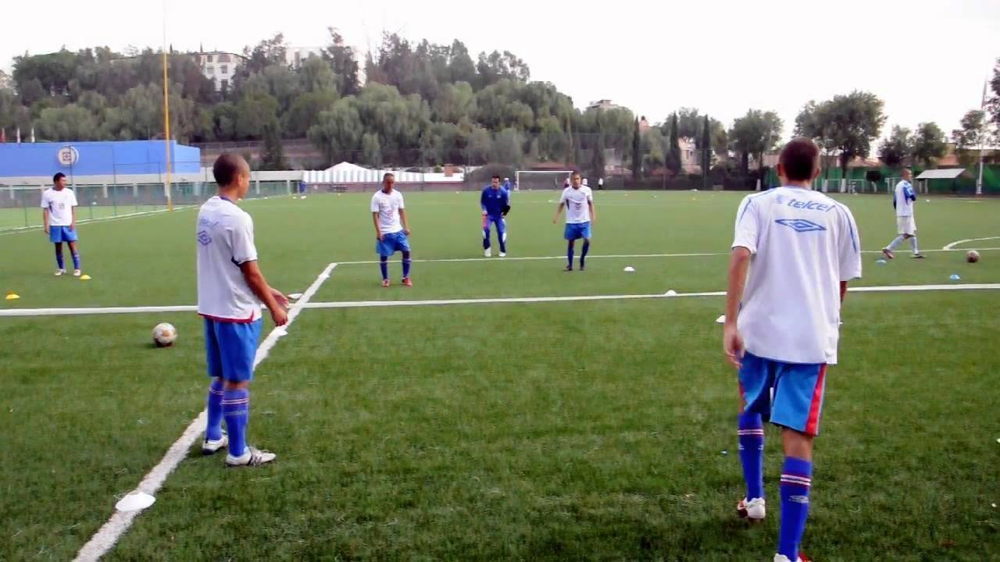
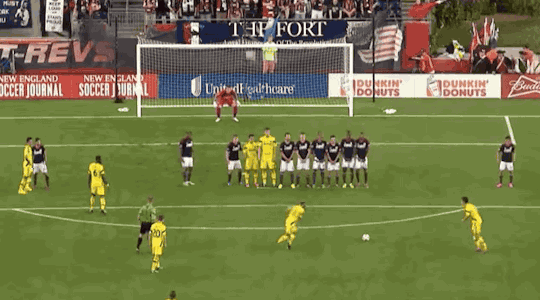
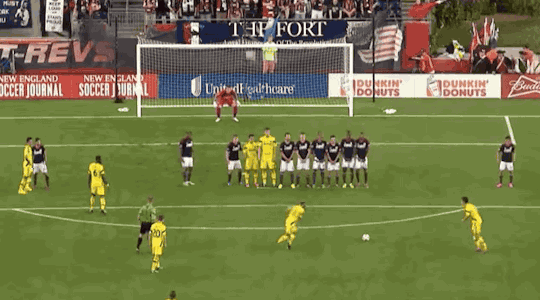
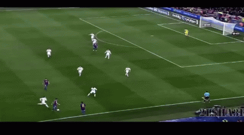
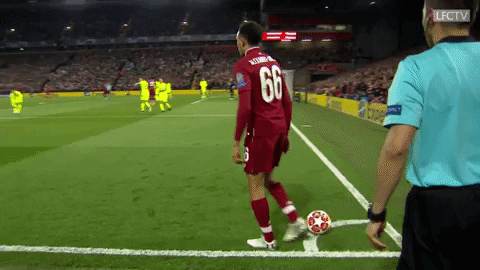

Gameplay
Association football is played in accordance with a set of rules known as the Laws of the Game. The game is played using a spherical ball of 68–70 cm (27–28 in) circumference, known as the football (or soccer ball). Two teams of eleven players each compete to get the ball into the other team's goal (between the posts and under the bar), thereby scoring a goal. The team that has scored more goals at the end of the game is the winner; if both teams have scored an equal number of goals then the game is a draw. Each team is led by a captain who has only one official responsibility as mandated by the Laws of the Game: to represent their team in the coin toss.
 

The primary law is that players other than goalkeepers may not deliberately handle the ball with their hands or arms during play, though they must use both their hands during a throw-in restart. Although players usually use their feet to move the ball around, they may use any part of their body (notably, "heading" with the forehead) other than their hands or arms. Within normal play, all players are free to play the ball in any direction and move throughout the pitch, though players may not pass to teammates who are in an offside position.
During gameplay, players attempt to create goal-scoring opportunities through individual control of the ball, such as by dribbling, passing the ball to a teammate, and by taking shots at the goal, which is guarded by the opposing goalkeeper. Opposing players may try to regain control of the ball by intercepting a pass or through tackling the opponent in possession of the ball; however, physical contact between opponents is restricted. Football is generally a free-flowing game, with play stopping only when the ball has left the field of play or when play is stopped by the referee for an infringement of the rules. After a stoppage, play recommences with a specified restart.

